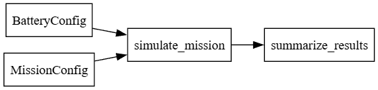

Drone Battery Monte Carlo
This project compares drone battery options using a Monte Carlo simulation model under varying mission conditions (e.g., payload, wind, and temperature). It includes:
- A simulation engine that estimates energy use and mission success
- A desktop GUI for running comparisons and viewing plots
- Published API documentation generated by Doxygen
Summary (What the code does)
This code simulates the same drone mission many times while randomly varying key environmental and mission conditions. Each trial estimates how much energy the drone would use and whether the battery can complete the mission while still meeting a required safety reserve.
Instead of assuming “one average scenario,” the Monte Carlo approach produces a distribution of outcomes (best-case, typical, worst-case) so you can compare battery choices more realistically.
Battery chemistry (what “Li-ion vs LiPo” means in the model)
The simulator compares two battery chemistries/form factors (example: Li-ion (NMC cylindrical) vs LiPo (pouch high-power)) by giving each battery its own performance parameters:
- Nominal capacity (Wh): stored energy available at room temperature
- Baseline power (W): typical cruise power draw with no extra load
- Payload penalty: added power draw per lb of payload
- Wind penalty: added power draw per mph of headwind
- Cold capacity penalty: capacity reduction per °F below 70°F
- Cold power penalty: power increase per °F below 70°F
In other words: “chemistry” differences are represented by different parameter values that reflect typical strengths/weaknesses (energy density, power delivery, cold performance, etc.).
Factors varied per trial (stochastic inputs)
Each Monte Carlo trial samples a new set of conditions, then recomputes mission energy:
- Wind (mph)
- Temperature (°F)
- Payload (lb)
- Distance factor (multiplier on nominal mission distance)
Two modes are supported: - Nominal mode: uniform sampling across realistic ranges - Extreme mode: triangular sampling biased toward harsher conditions (stronger wind, colder temps, heavier payload, longer distance)
Mission energy calculation (per trial)
For each battery and trial:
1. Compute trial distance
distance = nominal_distance * distance_factor
2. Compute power draw
power = base_power + payload_penalty*payload + wind_penalty*wind
3. Apply cold effects (if temp < 70°F)
- reduce effective capacity
- increase power draw
4. Compute flight time
time = distance / cruise_speed
5. Compute required energy
energy_required (Wh) = power * time
6. Determine success with safety reserve
Success if energy_required <= (effective_capacity * (1 - reserve_fraction))
Statistical outputs (what “Monte Carlo results” mean)
After running many trials, the code summarizes results per battery using distribution statistics:
- Success probability (%): fraction of trials that meet reserve requirement
- Remaining energy (%): distribution of energy left at end of mission
- Mean remaining
- 5th percentile (P5): “near worst-case” remaining energy
- 95th percentile (P95): “near best-case” remaining energy
- Operational averages: average miles and payload across trials (and across successful trials)
- Energy use metrics:
- Average Wh per mission
- Missions per charge: estimated missions possible before hitting reserve
- Deliveries per charge: a conservative integer version (floor)
The GUI also plots histograms of remaining energy so you can visually compare distributions (spread, overlap, tail risk) between chemistries.
API Reference
Open the generated Doxygen documentation:
Quick links


- API docs: https://jmo-ops.github.io/drone-battery-monte-carlo/
- GUI page: https://jmo-ops.github.io/drone-battery-monte-carlo/GUI.html
- Logic/model page:
Logic(use the navigation menu)
How to run
1) Create / activate your environment
If you already have a .venv, activate it:
```bash ..venv\Scripts\activate